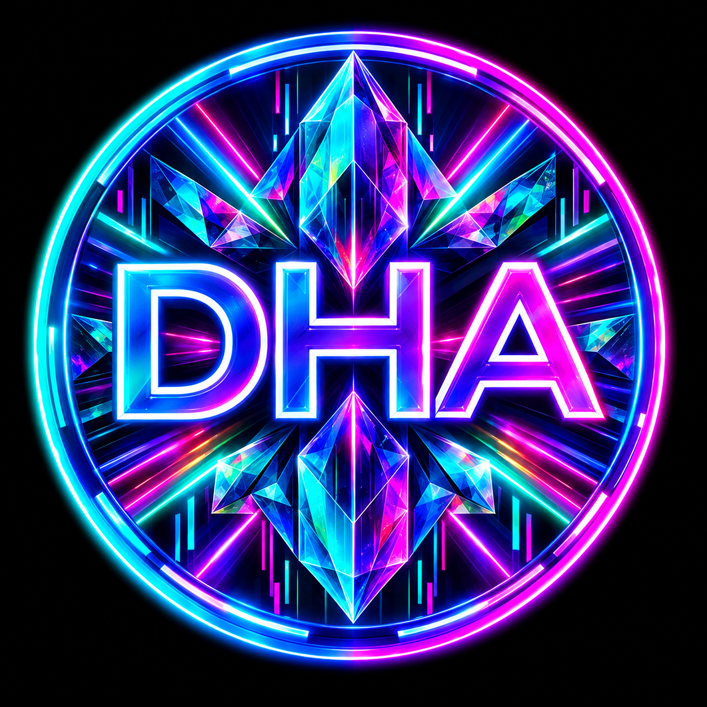

◇
Arte Digitale
Sistemi generativi, arte algoritmica, fotografia computazionale e media digitali sperimentali.
Tra l'arte e l'algoritmo, tra i dati e il sogno, tra l'intelligenza e l'istinto — D.H.A. opera nel vuoto d'inchiostro.

Digital Hana Arts è una bottega sperimentale di creatività computazionale che opera nello spazio interstiziale tra tecnologia ed espressione artistica.
Costruiamo software, sistemi visivi, esperimenti di apprendimento automatico, opere d'arte guidate dai dati e beni digitali orientati alla blockchain — il tutto con una sensibilità post-umana.
La nostra domanda centrale non è semplice: che cosa accade quando il calcolo diventa mezzo creativo?
D.H.A. opera attraverso le discipline, non dentro un'unica categoria tecnologica. Questo è il reticolo disfatto.
Sistemi generativi, arte algoritmica, fotografia computazionale e media digitali sperimentali.
Estrazione di dati, analisi, visualizzazione, calcolo statistico e scoperta guidata dai dati.
Apprendimento automatico, apprendimento profondo, visione artificiale e intelligenza artificiale generativa.
NFT, beni digitali, analisi della catena ed ecosistemi creativi decentralizzati.


Una piattaforma di ricerca e ingegneria blockchain — che intreccia scienza di laboratorio, infrastruttura decentralizzata e calcolo verificabile. Addestrare, registrare, verificare.

Una piattaforma d'arte computazionale basata su Julia, che esplora come le fotografie possano trasformarsi — attraverso l'elaborazione delle immagini, l'apprendimento automatico e i sistemi generativi — in nuove opere d'arte digitale.

Esplora la collezione ufficiale di Digital Hana Arts su OpenSea — beni digitali selezionati, opere generative e creazioni basate sulla blockchain.
Digital Hana Arts prende il nome da Hana — la gattina al cuore dell'identità visiva della bottega.
La sua presenza introduce qualcosa di deliberatamente umano e organico in un mondo altrimenti computazionale: curiosità, individualità e carattere.